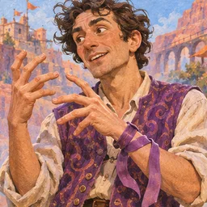
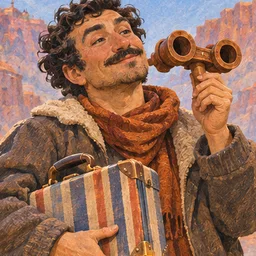

На встрече бывших друзей в пансионе всякий узнаёт знакомое прозвище и совсем другого человека. Помогите разобраться с двумя Капитанами, четырьмя посетителями свидания и кольцом размером с браслет; к последнему фуникулёру каждый должен забрать свой багаж и выбрать собственное продолжение.

Если партия изменила план
Перед чтением вступления сверьте место героев, присутствующих людей и предметы с итогом прошлого вечера. Если условия встречи отпали, сыграйте последствия там, где находится партия. Событие по расписанию может произойти за кадром. Герои узнают о нём от тех, кто был на месте.
Вечер 7. Если владельцы багажа отказались ехать вместе
Попросите каждого забрать свой чемодан с карусели или назвать человека, которому его доверяет. Наутро назовите раздельно тех, кто уехал, и тех, кто остался. Общую фотографию можно сделать лишь с согласия присутствующих.
Группа отказалась от задания
Возглавлять старую игру не будем. Расставим фотографии для желающих вспомнить её самим. Вносим добровольные роли в программу под настоящими именами. Появляются две разные подписи под общим снимком. Те, кто не пришёл, не получают придуманной роли.
Игроки раскрыли тайну раньше
Сличим обозначения на обоих листах и порядок игроков на снимках. Доступные свидетельства — Два листа одной игры, Снимки двух партий. На двух снимках одного Капитана играют разные дети. Прозвище указывает на роль в игре. Даём обеим компаниям опознать сменившихся Капитанов. Обе игры действительно состоялись. Друзьям больше незачем искать того, кто неправильно запомнил обещание.
Партия уступила поле
Плюшевая высота осталась за другой командой, взять медаль Капитана не удалось. Отдаём вещи хозяевам по одной, даже если круг не закончен. Меняемся семейными фотографиями на нейтральной скамье. Медаль и результат игры остаются у победителей.
Карман ведущего
Для игры без подготовки: что говорят люди, места в стороне от главной дороги и прохожие. Пометки о правде слухов — только для ведущего; сказанное за столом становится фактом мира, лишь когда вы его подтвердите.
Слухи
«Капитан у них — настоящий исследователь. Говорят, всю жизнь по горам, и плащ у него с медалями за каждую экспедицию».
Неправда. Марк — переплётчик; он не лгал прямо, но не поправил лестную догадку. Медали деревянные, их надписи шуточные. Слух хорош в первые два вечера, пока путаница двух колод ещё смешит, а не ранит.
«На той старой игре прозвища повторялись. Капитанов было двое, и Комет тоже, просто играли в разные вечера».
Правда. Это и есть причина фарса: солнечная и лунная колоды с одинаковыми прозвищами. Слух повторяет то, что Вера, Лида и снимки Полины подтверждают с первого вечера; ничего не нужно скрывать.
«У второго окна кто-то ждёт свидания. На доске мелом прямо так и написано, с завитушками».
Отчасти правда. Надпись есть, но это старая реплика из игровой карточки, которую Денис написал для узнавания друзей, а не приглашение. Слух приводит гостей на балкон в третьем вечере и сам по себе ничего не обещает.
«В Бархатной гостиной вчера сделали предложение. Кольцо на бархатной подушке своими глазами видели!»
Неправда. Кольцо — разъёмный реквизит великана из пяти дуг, в него проходит ладонь. Никакой помолвки нет. Поправляйте слух спокойно, без публичного суда над тем, кто его повторил.
«Плюшевые гуси по ночам просыпаются и сами разносят по комнатам забытые вещи».
Неправда. Зачарованный реквизит просыпается только по просьбе играющих и засыпает от слова «стоп». Забытые вещи лежат на общем столе во дворе. Безобидная байка для седьмого вечера.
«Опоздал на вечернюю кабинку — не беда. Утром в восемь уходит следующая, а Вера всегда найдёт комнату».
Правда. Последний вечерний рейс не последний шанс: утренний уходит в восемь, ночь в пансионе стоит обычных условий Веры. Слух снимает ложное давление в шестом и восьмом вечерах.
«Медь в пансионе вся из старого рудника: перила, ручки, значки, даже багажный круг».
Правда. Рудник давно закрыт, а металл остался в пансионе. Чистый колорит; про круг смотритель скажет то же самое.
«Корону над диваном носил тот же великан, для которого кольцо делали. Голова у него была с бочку».
Отчасти правда. Кольцо и правда реквизит игры в великана. Чья голова была размером с корону, не помнит никто; корона — талисман пансиона. Хорошая реплика в четвёртом вечере.
«Смотритель на крыльце однажды уехал вниз в короне из гостиной вместо собственной шляпы».
Правда. Это любимый анекдот Бориса; он рассказывает его охотно и никого не поучает. Пригодится, когда кому-то неловко из-за перепутанных вещей.
«Багажный круг в вестибюле, если его не придержать, крутится сам до утра».
Неправда. Круг ручной, как гончарный, и останавливается длинной ручкой; он не связан с приводом фуникулёра. Борис покажет это в шестом вечере.
«Рекорды на лестнице все настоящие. Один гость и правда двадцать минут смотрел на одно облако, и облако его дождалось».
Правда. Таблички пишут сами гости, выбирая рекорд сезона. Слух хорош во втором вечере, чтобы показать, что «экспедиция» здесь — дело на двадцать две ступени.
«Хозяйке отпуск не положен. Вера восемь дней на ногах, а отдохнёт, только когда уедет последний гость».
Отчасти правда. Вера и правда весь срок хлопочет, но отдых для неё не запрещён: в последней сцене она впервые снимает туфли и садится в кресло. Если герои предложат ей посидеть раньше, это приятный жест, а не ход сюжета.
Места в стороне
Окошко пирожницы
Маленькое окошко в стене кухни, выходящее на прогулочную лестницу. Утром повариха выставляет на подоконник пироги с абрикосами и медную кружку для монет: каждый берёт сам и сам платит. Говорят, за двадцать лет кружка ни разу не оказалась легче, чем должна. Возле окошка всегда толкутся гости в халатах и обсуждают, кто вчера проспал завтрак.
Старая штольня
Заколоченный вход в рудник на нижней террасе, под смотровой площадкой. На досках прибита медная табличка с датой последней плавки, а у входа стоит скамья, с которой видно ручей. Внутрь давно никто не ходит. Отдыхающие любят класть на скамью начищенную монетку на память; раз в месяц смотритель собирает их и покупает на все мел для доски рейсов.
Мостик через ручей
Узкий деревянный мостик внизу каньона, куда спускается тропа от пансиона. Перила у него медные и тёплые от солнца, а доски поскрипывают на разные голоса. Местная примета велит загадывать желание на средней доске, но только такое, которое можно исполнить самому. Под мостиком в тени живут лягушки, и по вечерам они перекрикивают гостей на балконе.
Крыша с полотенцами
Плоская крыша над кухней, где сушат полотенца и скатерти пансиона. В ветреный день они хлопают, как флаги, и снизу кажется, что пансион вот-вот отчалит. Сюда поднимаются по приставной лестнице, чтобы посидеть в тишине: гостей тут не бывает, только прачка и иногда кошка. С крыши видно сразу и крыльцо фуникулёра, и балкон второго окна.
Кладовая зонтиков
Узкий чулан у входной двери, где висят забытые гостями зонтики за много сезонов. Их выдают любому, кто попросит, с одним условием: вернуть в чулан, а не забрать домой. У каждого зонтика на ручке бирка с прозвищем, которое ему дали служащие: «Генерал», «Вечно мокрый», «Подарок тёщи». В каньоне дождь редок, поэтому половину зонтиков ни разу не раскрывали.
Прохожие
Клава Абрикосова
Повариха пансиона, круглая и быстрая, в муке до локтей и с деревянной ложкой за поясом, как с саблей.
«Кто проспал завтрак, тому пирог. Кто не проспал, тому два, раз такой молодец».
Может рассказать: Знает, кто из гостей встаёт раньше всех и в какое время на кухне можно спокойно поговорить без свидетелей.
Гриша Носильщик
Жилистый носильщик лет тридцати с медной бляхой на ремне и тележкой, у которой одно колесо поёт.
«Чемоданы не путаю. Путаю только хозяев, когда они все в одинаковых шляпах».
Может рассказать: Помнит, что личные чемоданы гостей различаются формой и метками у ручки, а бирки с прозвищами снимаются за минуту.
Эльза Сезонная
Пожилая постоялица в шляпе с вуалью, приезжающая каждый сезон на одни и те же восемь дней; всегда с книгой и биноклем.
«Я здесь двадцатый раз, милые. Пансион меняется меньше, чем гости».
Может рассказать: Помнит, что двенадцать лет назад в галерее два вечера подряд играли в одну и ту же игру и оба раза ужасно громко.
Сава Акварельщик
Художник двадцати трёх лет в соломенной шляпе, с этюдником на плече и пятнами краски на коленях.
«Закат здесь надо писать быстро. Солнце пересчитывает медяки и уходит, не дожидаясь сдачи».
Может рассказать: Каждый вечер рисует каньон с лестницы и может сказать, в котором часу свет на балконе самый красивый.
Филат Почтовый
Немолодой почтальон с медной трубой-рожком на шнурке и сумкой, набитой открытками с видом каньона.
«Открытки с каньоном пишут все. Доходят до адресата, правда, только честные».
Может рассказать: Знает, что открытки из пансиона уходят утренней кабинкой, и может отправить письмо, если кто-то не хочет говорить лично.
Сёстры Ракитины
Две пожилые сёстры-близнецы в одинаковых панамах, которые нарочно путают, кто из них кто.
«Я не Маня, я Таня. Или наоборот, мы сами уже не уверены».
Может рассказать: Охотно подтвердят, что одинаковое имя или шляпа ещё ничего не говорят о человеке: их путают с детства, и никто не пострадал.
За десять минут до первой игры
- Откройте первый вечер, прочитайте правду мира и участников. Остальные вечера — планы, их исход решают игроки.
- Выберите пакет под фактическое число игроков. Первые три героя — готовое ядро; остальные добавляются по порядку. Возраст игрока не определяет героя.
- Согласуйте темы, длительность и сигнал паузы. Передайте игрокам только players.html; раздатки выдавайте по отдельности после указанного открытия.
- Откройте Мастерскую проекта, создайте личный черновик и импортируйте выбранный JSON через загрузку пакета. Проверьте состав и начало в предпросмотре. Запуск кампании подтверждает ведущий штатным действием.
- Откройте иллюстрацию завязки отдельно. Портреты героев входят в файл для игроков, портреты встречных — в книгу ведущего. Тактические схемы доступны в разделе карт.
Формат и темы
8 вечеров; 2 часа 40 минут: 10 минут открытия и повтора, три сцены по 40 минут, перерыв 15 минут, завершение 15 минут.
Солнечное курортное фэнтези: фуникулёр ходит над медными скалами, заколдованный реквизит годится для добровольных игр, а отпуск длится восемь дней. Канонические воин, плут, жрец и волшебник 3-го уровня остаются обычными классами; сценические профессии меняют только оболочку. Ни магия, ни проверки не устанавливают чужие чувства.
Тёплый фарс с настоящей неловкостью: смеются над огромным плащом и буквальным исполнением метафоры, а не над возрастом, телом, отказом или неопытностью человека.
- Человек может перестать соответствовать удачному старому прозвищу.
- Подарок, реквизит и обещание — разные вещи, даже если перевязаны одной лентой.
- Новая пара, дружба, расставание и неполное примирение равноценны как честные исходы.
- Приятная ошибка смешна до тех пор, пока можно перестать её поддерживать.
Границы
- Аудитория игроков 16+; все именованные люди, герои и участники романтических линий 21+. Все участники давней встречи также были взрослыми. Никаких сексуальных сцен.
- Романтика героев игроков включается только по желанию их игроков; можно всю кампанию помогать друзьям, заниматься вещами и решать практические задачи. Отказ не уменьшает значимость героя.
- Нельзя покупать расположение выигрышем, заклинанием или проверкой. Успешное убеждение делает просьбу ясной, но НИП и игрок сохраняют право на любой ответ.
- Не разыгрывайте принуждение к прикосновениям, аутинг, унижение телесности, преследование после отказа и наказание за расставание. На просьбу остановиться ведущий сразу меняет сцену без объяснений.
- Столкновения с мягким зачарованным реквизитом добровольны; выход, разговор и осмотр дают те же сюжетные сведения. Это игровая фантазия без реальных медицинских или юридических инструкций.
Люди за столом
- Перед первым вечером каждый выбирает допустимую роль: участник романтической линии, наблюдатель или только друг. Выбор можно изменить лично ведущему; не обсуждайте за игрока причину. Все герои взрослые независимо от возраста игроков.
- Первого говорящего меняйте по кругу между сценами. Возраст игрока не назначает лидера, класс или право решать за других. Письменное действие, короткий пересказ и реплика от третьего лица равноправны.
- Дайте каждому простую конкретную задачу и необязательный глубокий вопрос: например, найти ручку чемодана и решить, какую старую роль оставить. Разрешайте пас без замены его испытанием.
- При разделении группы чередуйте короткие действия раз в пять минут и собирайте всех через десять минут у обозначенного предмета: плаща, макета или карусели. Согласованные приватные сведения пересказывает только их получатель.
- На трёх героях любую улику, помощь и встречу может вести любой участник; герои с четвёртого по седьмого места необязательны. Отсутствующий класс, заклинание или человек не закрывает путь.
- При отсутствии игрока герой занят своим багажом; с согласия игрока его практическое действие передают товарищу. Не выбирайте его чувства, обещания или партнёров. При возвращении предложите краткое описание доступных фактов.
- Ведущий отмечает отдельно показанные факты, предположения и будущие условные последствия. Раздатки выдаются по указанному открытию; начальные знания НИП не расширяются автоматически после чужого разговора.
- Сделайте перерыв после второй сцены. В конце спросите, какую шутку повторять приятно и какая уже исчерпана; ответ допустим на карточке. Следующий вечер начинайте с выбора: продолжать псевдонимы или пользоваться именами.
Масштабирование группы
3 игроков
Первые три героя образуют полный состав. В каждой сцене предложите одному смотреть на предмет, другому уточнять слова, третьему выбирать практическое действие; роли меняются. Все задачи последовательны, необязательных героев не заменяют НИП.
4 игроков
Два героя занимаются вещью, двое сверяют воспоминания; через десять минут объединяют только сведения, которые готовы сообщить. Четвёртое место даёт дополнительное мнение, не ключевой класс.
5 игроков
Две пары разбирают разные нелепости, пятый выбирает собственную задачу: отметить подписи, проверить реквизит или поговорить с гостем. Не превращайте его в постоянного секретаря; после каждой сцены роли меняются.
6 игроков
Работают две тройки с общим возвратом каждые десять минут. Одни могут говорить, другие воспроизводят физическую путаницу на макете; каждый получает самостоятельный выбор в финале.
7 игроков
Разделите стол на тройку и четвёрку; ведущий чередует действия каждые пять минут. Седьмой участник получает отдельный предмет и вопрос, а не обязанность вести чужой роман. В кульминации все решают по одной операции с багажом.
Первое чтение вслух
Кабинка фуникулёра медленно спускается в каньон по стальному канату. За стеклом проплывают рыжие скалы, слоистые, как пирог, внизу блестит ручей, а на дальних террасах одно за другим вспыхивают окна. На закате камни здесь становятся цвета начищенной монеты — местные так и говорят: «солнце пересчитывает медяки». Когда-то в Медном Каньоне добывали медь; рудник давно закрыт, а металл остался в перилах, дверных ручках и гостевых значках. На уступе над ручьём стоит Пансион Медного Каньона: белёные стены, зелёные ставни, широкая прогулочная лестница к смотровой площадке и крытое крыльцо, где смотритель в фуражке сметает с лавок пыль мягкой щёткой. Сюда приезжают на восемь дней — по курортной примете, ровно столько нужно, чтобы забыть рабочий будильник. Двенадцать лет эта компания не собиралась вместе. За это время кто-то сменил город, кто-то ремесло, кто-то только причёску. В вестибюле пахнет мастикой для пола, апельсиновыми корками и тёплой медью. Посреди зала стоит медный поворотный круг для чемоданов; его вращают рукой и останавливают длинной ручкой. На круге торчит один парадный плащ, бархатный, с медалями, и из-под него видны сразу две пары ног. Над стойкой натянута полотняная лента: «Капитан, Комета, Сова — мы снова вместе!» По её углам кто-то нарисовал солнце и луну. Из-под бархатного подола высовывается рука хозяйки и протягивает вам горсть пустых значков. «Пишите имя, прозвище или рисунок, — доносится голос Веры. — Каждый сам решает, как его звать эти восемь дней. А кто-нибудь помнит, почему у нашего Капитана два билета и ни одного рукава?»
Правда мира · только ведущему
- Двенадцать лет назад компания играла две версии игры «Кем я стану через десять лет». На колоде с солнцем Капитан — исследователь, Комета — вечная путешественница, Сова — молчаливый мудрец; на колоде с луной те же прозвища означают человека с домом, терпеливого спутника и любителя шумных праздников. Это вымышленные роли, не предсказания и не обязательства.
- Вера достала обе колоды из реквизитного ящика и выставила лицевые карточки рядом. Она помнит, что вариантов два, но не знает, какие нынешние гости приняли роль за биографию другого. Правила и печатные значки доступны с начала встречи; тайного подменщика нет.
- Марк поддержал впечатление о путешествиях, потому что стесняется своей спокойной работы переплётчика. Алина позволила знакомым считать себя вечно свободной странницей, хотя теперь любит собственную мастерскую дорожных ящиков. Каждый знает только собственное умолчание и старые впечатления о друзьях.
- Денис и Полина расстались два года назад. Денис допускает новый роман, Полина сейчас хочет обсудить только дружбу и вернуть несколько вещей. Реквизитное кольцо из разъёмных дуг принадлежит игре в великана: оно не является чьим-либо предложением брака.
- Рамиль и София знают друг друга по нескольким дружеским встречам. Оба интересуются общением, но его форму определят только их будущие добровольные ответы. Фраза мелом у балкона — старая реплика игры, которую Денис написал для узнавания друзей, а не чьё-то тайное приглашение.
- Багажная карусель — исправный ручной поворотный круг. Старые прозвища на многоразовых ярлыках легко перепутать; личные чемоданы различаются по форме, владельческим отметкам и содержимому, показанному самим владельцем. Съёмный парадный плащ соединяет шесть ручек декоративными петлями. Их можно спокойно расстегнуть.
- Последний вечерний фуникулёр не является последним шансом выбраться из каньона: следующий рейс будет утром. Опоздание стоит ещё одной ночи и изменения личных планов, но не жизни, имущества или права отказаться от общения. Начальные источники не знают решений, которые гости и герои примут позднее.
Восемь вечеров
- 1. Два Капитана на один плащ — Познакомиться с нынешними людьми, распутать первый физический фарс и получить доступ к простой причине повторяющихся псевдонимов.
- 2. Экспедиция длиной в лестницу — Превратить ошибку о героической биографии в конкретную совместную прогулку и дать Марку возможность действовать нынешним умением.
- 3. Балкон на четыре недоразумения — Разобрать разницу между цитатой и личным приглашением, затем помочь участникам задать собственные конкретные вопросы.
- 4. Кольцо, которое всем велико — Разобрать ложное впечатление о помолвке и отделить возвращение вещи от надежды на возобновление отношений.
- 5. Чемоданы несбывшихся профессий — Сделать что-то нынешними умениями, решить судьбу старого реквизита и выбрать, какую привычную роль больше не хочется обслуживать.
- 6. Репетиция отъезда — На безобидном макете освоить будущую предметную задачу, заранее узнать цену задержки и отделить подарок от выбора спутника.
- 7. Ночь вещей без хозяев — Вернуть оставшиеся личные вещи, сделать последнее общее воспоминание по желанию и подготовить конкретные решения отъезда.
- 8. Последний оборот карусели — Вернуть каждому выбранный им багаж, отделить реквизит от личных подарков и закончить линии людей теми решениями, которые они действительно приняли.
Места
Медный Каньон
Глубокий каньон с террасами из рыжего слоистого камня, по которым вьются курортные тропы, а над ними на стальном канате ходит фуникулёр. Когда-то здесь добывали медь, и в память об этом в пансионе до сих пор медные ручки, перила и значки. Каждый закат красит скалы в цвет начищенной монеты; местные говорят, что в этот час солнце пересчитывает медяки.
Вестибюль с каруселью
Высокий светлый зал с полом из тёмного дерева, натёртым мастикой до блеска. Посередине стоит медный поворотный круг для багажа: его вращают рукой, как гончарный, и останавливают длинной ручкой. Рядом — стойка хозяйки с коробкой значков, глубокие кресла и большой парадный плащ на нескольких съёмных лентах. Здесь встречают гостей и отсюда же провожают их к фуникулёру.
Солнечная галерея
Длинная застеклённая галерея, где даже в пасмурный день светло, как на террасе. Вдоль окон тянется стол для настольных игр, у стены стоят стенд с пожелтевшими карточками и раскрытая гостевая книга. За стеклом на середине каната спокойно расходятся две кабинки фуникулёра. Здесь пахнет чаем и бумагой, а по вечерам гости спорят о правилах так громко, что слышно на балконе.
Широкая прогулочная лестница
Низкие широкие ступени поднимаются от галереи к смотровой площадке, а рядом вьётся длинный пологий обход для тех, кто не спешит. Площадка близко — её видно снизу. По краям стоят деревянные указатели туристических рекордов, выкрашенные медной краской: кто дольше всех смотрел на облако, кто громче всех чихнул. Ограждение крепкое, а за ним только вид.
Балкон второго окна
Просторный застеклённый балкон у второго окна галереи: четыре плетёных кресла, две расписные ширмы и грифельная доска для рисования мелом. Отсюда виден весь каньон до дальнего гребня. Из соседней галереи сюда долетает эхо, порой такое ясное, будто говорят прямо за ширмой. Гости пансиона любят назначать здесь встречи — и путать, у которого окна.
Бархатная гостиная
Тёплая комната с бархатными шторами цвета спелой вишни, низкой сценической площадкой и мягкими ширмами. В углу стоит коробка крупного реквизита, из которой торчат перья и картонные мечи. Над диваном висит ложная корона размером с обруч; её считают талисманом пансиона, хотя никто не помнит, чья голова была такого размера. По вечерам здесь разыгрывают шуточные сцены для желающих.
Чердак дорожных ролей
Светлый чердак под скатной крышей, куда ведут широкая лестница и подъёмная площадка с медной решёткой. На открытых полках рядами висят чехлы с костюмами, на каждом — бирка с названием роли. Пахнет деревом, лавандой от моли и горячим утюгом. У слухового окна стоит небольшой стол для починки костюмов с катушками, ножницами и коробкой запасных пуговиц.
Комната дорожных макетов
Небольшая комната с одним большим столом, на котором выстроен игрушечный каньон: канат из бечёвки, крошечная кабинка фуникулёра и шесть разноцветных деревянных чемоданов на поворотном круге размером с блюдце. Рядом лежат большие копии фигур, удобные для игры без мелкой моторики. Пахнет столярным клеем и свежей краской.
Двор плюшевых гусей
Ровный внутренний двор, вымощенный тёплой рыжей плиткой, где устраивают шуточные эстафеты. Вдоль стены на подставках дремлют мягкие плюшевые гуси в жилетах с нашивками — зачарованный реквизит, который просыпается только по просьбе играющих. Рядом стоит стол с лентами и коробками, а по краю двора идёт свободный обход к скамьям в тени.
Крыльцо фуникулёра
Крытое крыльцо с длинными лавками, отполированными сотнями дорожных пальто, и большой доской рейсов, где время пишут мелом ровными буквами. Из пансиона сюда ведёт широкий короткий проход без опасного обрыва. Смотритель держит здесь щётку для скамеек и чайник; отсюда видно, как кабинка медленно подходит к причалу и звякает колоколом.
Вера Сольм

38 лет. Медный значок хозяйки, удобные туфли и карандаш, который всякий раз оказывается за другим ухом. Хозяйка пансиона и участница прежней компании. Она предложила встретиться на восемь дней и достала старые игры.
Место: Вестибюль с каруселью
Намерение
Провести отпуск вместе с друзьями, а не быть невидимой устроительницей их воспоминаний.
Собственные знания
- В старом реквизитном ящике лежали солнечная и лунная колоды с одинаковыми прозвищами.
- Съёмные петли парадного плаща крепятся к багажным ручкам только для шутки.
- Карусель исправна; последний вечерний рейс сменяется обычным утренним.
- Все приглашённые герои и гости взрослые; романтического задания в программе встречи нет.
Секрет или личное убеждение
Вера помнит две колоды, но считает различие очевидным и ещё не заметила всех неверных выводов гостей. Ей неловко признать, что половину старых прозвищ она сама уже путает.
Граница и раскрытие
Не согласна быть виноватой за каждое умолчание взрослого гостя. Просит звать её участвовать в игре, а не только устранять последствия.
Если показать две карточки или попросить правила, Вера сразу объясняет различие колод и достаёт доступный лист. Она не знает за других, какое прозвище они выбрали сейчас.
Марк Волн

41 лет. Короткая борода, слишком большой парадный плащ на одном плече и крепкий синий чемодан. Старый друг, который откликается на Капитана и рассказывает о красивых чужих путевых книгах.
Место: Вестибюль с каруселью
Намерение
Поговорить с Алиной о нынешней жизни и почувствовать себя интересным без выдуманного путешествия.
Собственные знания
- Он играл солнечного Капитана двенадцать лет назад; биография на карточке была вымышленной.
- На его синем чемодане изнутри ручки вытиснена маленькая книжная скоба.
- Медали на плаще сделаны из окрашенного дерева и принадлежали старому реквизиту.
- Алина раньше любила уезжать без подробного плана; её нынешние желания он не знает.
Секрет или личное убеждение
Марк — переплётчик, а не исследователь каньонов. Он не придумал прямой лжи, но не исправил два лестных предположения о своём прозвище и теперь боится нелепого разоблачения.
Граница и раскрытие
Готов назвать свою работу лично, но не хочет публичного номера «разоблачи труса». Отказ Алины от сближения должен оставаться полноценным ответом.
Если спросить о конкретной книге, предложить показать ремесло или спокойно уточнить профессию, Марк объясняет её без проверки. Он может признать умолчание, но реакцию Алины ведущий определяет по разговору.
Алина Клен

37 лет. Рыжий платок, короткая рабочая куртка и плоский медный ящик с аккуратными угловыми накладками. Любит рассматривать чужие дорожные сумки и до сих пор смеётся, услышав прозвище Комета.
Место: Балкон второго окна
Намерение
Быть замеченной в сегодняшней жизни: у неё собственная мастерская, домашние привычки и интерес к людям, а не только к дороге.
Собственные знания
- Её давняя роль Кометы принадлежала солнечной колоде и не была клятвой.
- Медный ящик сделан в её мастерской; под накладкой выжжена ветка клёна.
- Разъёмное большое кольцо когда-то использовалось в игре в великана.
- Она не писала нынешнюю фразу мелом у второго окна и никому не обещала свидание.
Секрет или личное убеждение
Алина позволила старым друзьям продолжать легенду о вечной страннице. На самом деле последние годы она довольна жизнью на одном месте и не хочет уезжать ради доказательства смелости.
Граница и раскрытие
Не принимает решений о путешествии или отношениях ради поддержания старого образа. Готова говорить о дружбе; романтический ответ не известен заранее.
Если спросить про ящик или её обычный день, она показывает свою метку и рассказывает о мастерской. Для близкого разговора просит обратиться по имени и задать настоящий вопрос вместо цитаты из роли.
Денис Скат

39 лет. Фиолетовый жилет, длинная мягкая лента на запястье и выразительные, всё время занятые руки. Костюмер и любитель старых шуточных сцен. По привычке зовёт себя Совой, хотя редко сидит молча.
Место: Бархатная гостиная
Намерение
Узнать, возможна ли новая близость с Полиной, и вернуть ей шарф без скрытого условия.
Собственные знания
- Два года назад он и Полина расстались; нового соглашения об отношениях у них нет.
- Надпись «Комета ждёт Капитана у второго окна» — его цитата из старой игровой карточки.
- Крупное кольцо разбирается на пять дуг и хранится как реквизит великана.
- В фиолетовом складном кофре есть его катушка, реквизитные дуги и шарф Полины, который она разрешила пока хранить.
Секрет или личное убеждение
Денис допускает возобновление романа, но не знает ответа Полины. Он написал старую реплику игры мелом на балконе, ожидая узнавания шутки, и не считает её личным приглашением.
Граница и раскрытие
После ясного отказа прекращает романтические предложения. Его расстройство допустимо, но не становится задачей Полины или игроков.
По прямому вопросу признаёт авторство меловой цитаты и показывает реквизит. Если разговор касается чувств Полины, направляет спрашивающего к ней и не выдаёт свои надежды за её согласие.
Полина Вет

40 лет. Светлый плоский кофр, большие очки в янтарной оправе и потёртый ремень камеры. Фотограф, которая привезла два снимка старой компании и хочет сделать несколько новых без обязательной общей позы.
Место: Солнечная галерея
Намерение
Вернуть шарф, поговорить с Денисом о возможной дружбе и уехать по собственным планам.
Собственные знания
- На двух её старых снимках гости держат разные колоды и по очереди носят одинаковые прозвища.
- Она играла лунного Капитана, который хотел иметь дом, а не отправляться в экспедиции.
- Шарф остался у Дениса с её разрешения, кражи или спора о собственности нет.
- Её плоский светлый кофр отмечен силуэтом рамки под боковой ручкой.
Секрет или личное убеждение
Полина сейчас не хочет возобновлять роман с Денисом. Она готова обсудить дружбу, но опасается, что любое тёплое воспоминание окружающие превратят в обещание вернуться.
Граница и раскрытие
Разрешает рассматривать старые фотографии, но новый снимок каждого делают только с его согласия. Её отказ от романа нельзя преодолеть броском.
Покажет две фотографии по просьбе и укажет солнце и луну на карточках. В личном разговоре ясно назовёт нынешнее желание дружбы; право раскрыть его другим остаётся у неё.
Рамиль Горн

38 лет. Полосатый небольшой чемодан, мягкая куртка и деревянный театральный бинокль без стёкол. Ведёт кружок дорожных настольных игр. На старую Комету откликается с преувеличенным поклоном.
Место: Широкая прогулочная лестница
Намерение
Провести время с Софией без необходимости поражать её эффектной биографией.
Собственные знания
- Его Комета была лунной ролью терпеливого спутника; роль Алины он точно не помнит.
- Карта с громадными стрелками — поле старой настольной прогулки, а не настоящий маршрут по скалам.
- Полосатый чемодан отмечен маленьким квадратным узлом под ручкой.
- София раньше соглашалась играть с ним за общим столом; это не было признанием в любви.
Секрет или личное убеждение
Рамиль считает Софию интересной и не знает, хочет ли она свидания или просто совместной игры. Он боится задать простой вопрос, потому что привык сначала придумывать эффектное вступление.
Граница и раскрытие
Не хочет, чтобы за него приглашали на свидание или выдавали его надежду за договорённость. Может выбрать дружескую встречу сам.
Если предложить сформулировать одну конкретную просьбу, Рамиль пробует её произнести своими словами. О происхождении карты и своей роли рассказывает сразу при осмотре игры.
София Ланс

36 лет. Зелёная круглая шляпная коробка, простой льняной костюм и миниатюрная кабинка на ладони. Строит игрушечные макеты дорог и любит буквальные ответы. Охотно показывает крупные деревянные фигурки.
Место: Комната дорожных макетов
Намерение
Отдохнуть с друзьями и понять, какую именно встречу предлагает Рамиль: игру, прогулку или свидание.
Собственные знания
- Она играла шумную лунную Сову; молчаливого мудреца в той партии не было.
- Макет карусели имеет шесть разных чемоданов, повторяющих формы настоящего багажа гостей.
- На её зелёной круглой коробке под ручкой вырезано маленькое колесо.
- Багажные ярлыки с прозвищами снимаются; они не обозначают владельца навсегда.
Секрет или личное убеждение
София испытывает любопытство к Рамилю, но его сценические намёки её утомляют. Она пока не выбрала романтический ответ и не хочет, чтобы третьи лица выбирали его за неё.
Граница и раскрытие
Отвечает только на понятное предложение и может выбрать дружбу или отказ. Не разрешает выспрашивать ответ через гадание или проверку проницательности.
Если игроки принесут макет или попросят простой пример, София покажет съёмность ярлыков. Личный вопрос предпочитает слышать от самого Рамиля; помощники могут освободить место, но не отвечать за двоих.
Борис Откос

58 лет. Аккуратная фуражка, короткая тёплая куртка и мягкая щётка для скамеек. Смотритель крыльца фуникулёра, знакомый с багажом пансиона и шуточной церемонией отъезда.
Место: Крыльцо фуникулёра
Намерение
Получить понятные человеческие имена на багаже и успеть спокойно выпить чай после смены.
Собственные знания
- Последний вечерний рейс отправляется в девять; следующий — утром в восемь.
- Оставшийся гость может переночевать в пансионе на обычных условиях Веры.
- Поворотный круг останавливается за ручку и не соединён с приводом фуникулёра.
- Личные вещи допустимо переносить отдельно от реквизитного плаща.
Секрет или личное убеждение
Борис однажды сам уехал с реквизитной короной вместо шляпы и хранит воспоминание как любимый анекдот. Он не желает превращать нынешнюю путаницу в урок дисциплины.
Граница и раскрытие
Не выбирает за гостей, кто с кем едет, и не объявляет опоздание катастрофой. Просит не приписывать ему чужие тайны.
Показывает расписание по первому вопросу и демонстрирует ручку карусели на пустом круге. Может рассказать свой анекдот, если нужен спокойный выход из неловкости.
Лида Финн

42 лет. Полосатая безрукавка, два медных жетона на цепочке и коробка крупных цветных прищепок. Когда-то вела обе игры компании; теперь заведует добровольными реквизитными развлечениями пансиона.
Место: Чердак дорожных ролей
Намерение
Посмеяться вместе с друзьями и помочь им оставить удачные игры, не превращая людей в вечных персонажей.
Собственные знания
- Она лично вела солнечную и лунную партии двенадцать лет назад; прозвища повторялись, персонажи различались.
- В тетради записан старый порядок смены карточек, а не обязательства людей.
- Кольцо великана состоит из пяти разъёмных дуг и выдаётся вместе с карточкой реквизита.
- Плюшевые фигуры включаются только по просьбе участников и прекращают игру по слову «стоп».
Секрет или личное убеждение
Лида помнит обе партии лучше остальных и считает ошибку с прозвищами смешной, но ещё не знает, кому она причиняет неловкость. У неё сохранилась собственная тетрадь с порядком смены ролей.
Граница и раскрытие
Не устраивает публичного разоблачения по просьбе одного гостя и не назначает романтические призы. Любая реквизитная игра может остаться простой демонстрацией.
На вопрос о двух Капитанах без проверки рассказывает о двух партиях, сверяет память с тетрадью и показывает две оборотные стороны. Не знает нынешних чувств друзей.
Возможные финалы
Первое настоящее свидание
Условия: Если два взрослых НИП или добровольно участвующих взрослых героя прямо предложат и примут новую встречу, зная нынешние имена и желания друг друга.
Они выбирают небольшой следующий шаг: прогулку, совместную дорогу или ещё один день в пансионе. Это начало пары, а не доказательство вечной совместимости.
Цена: Придётся отказаться от удобной старой роли и выдержать неопределённость; другой человек вправе позже изменить решение.
Друзья с разными билетами
Условия: Если участники выберут дружбу и договорятся хотя бы об одном посильном способе поддерживать связь, не обещая романтики.
Чемоданы уезжают в разные стороны, но личный предмет или смешная общая привычка получает добровольное продолжение. Герои определяют его форму.
Цена: Старые ожидания не осуществятся; близость придётся строить заново без прежних ежедневных встреч.
Чистая ручка чемодана
Условия: Если хотя бы один участник завершит отношения и другой примет границу без уговоров или если стороны предпочтут отдельный отъезд.
Они возвращают вещи или добровольно оставляют подарок, называют только то, что действительно хотят сказать, и расходятся. Хорошим концом может быть отсутствие следующего обещания.
Цена: Останется печаль и несостоявшийся вариант будущего; никто не обязан компенсировать их новым свиданием.
Не всё поместилось
Условия: Если бытовую путаницу удастся разобрать, но кто-то пока не готов простить умолчание, отвечать на личный вопрос или определять отношения.
Гости уезжают со своими вещами и незавершённым разговором. Можно разрешить одно будущее обращение, запретить его или оставить решение открытым; каждая линия отмечается отдельно.
Цена: Общая фотография может остаться неполной, а некоторые воспоминания — болезненными. Практическая помощь не покупает прощение.
Утренний рейс
Условия: Если группа добровольно отложит отъезд либо не закончит с багажом к объявленному вечернему рейсу.
Вера предоставляет обычную дополнительную ночь по заранее известным условиям. Утром можно уехать вместе, отдельно или после короткого разговора; никакого обязательного примирения не происходит.
Цена: Гости тратят время и средства на ночь и меняют планы. Ведущий не превращает задержку в катастрофу.
Раздатки · выдавать постепенно
- Кем я стану через десять лет: две колоды — Когда герои прочитают оба листа в галерее или попросят Веру объяснить правила; уже в первом вечере, без проверки.
- Самая длинная короткая экспедиция — После осмотра развёрнутой настольной карты либо прямого объяснения Рамиля во втором вечере.
- Две подписи на оборотах снимков — Когда Полина по просьбе показывает обе фотографии; третий независимый путь доступен при первом разговоре с ней, обычно не позднее третьего вечера.
- Карточка реквизита: рука великана — После осмотра стыков кольца или когда Лида показывает карточку вместо добровольной игры; победа в столкновении не нужна.
- Что лежит в чемоданах ролей — При открытом осмотре шести карманов на чердаке или после просьбы к Вере принести каталог; можно получить раньше пятого вечера.
- Багаж по форме и личной метке — После осмотра схемы в комнате макетов или когда владельцы по очереди укажут свои вещи; никакого досмотра личного содержимого не требуется.
- С крыльца фуникулёра — При первом вопросе о времени отъезда, обязательно до любых финальных решений; обычно в шестом вечере.
- Моя карточка отъезда — Когда начинается последняя сцена восьмого вечера и каждый добровольно выбирает, какую часть собственного итога сообщить; карточку можно не заполнять.
Как читать игровые проверки
Проверки характеристик и навыков, переговоры, часы и последствия из книги разрешает ведущий. Они не являются дополнительными автоматическими правилами приложения. Улики доступны без обязательного успешного броска. Подготовленные встречи начинаются только по решению ведущего; исходы и эпилоги заранее не записаны.
Статус подготовки
Авторская кампания подготовлена отдельным агентом, запрошенным как GPT-6 Astra / max. Проверки пакетов и игровых границ описаны в verification.json и общем отчёте. Живой плейтест с людьми ещё не проведён. Локальная папка с исходниками и книгой предназначена ведущему.